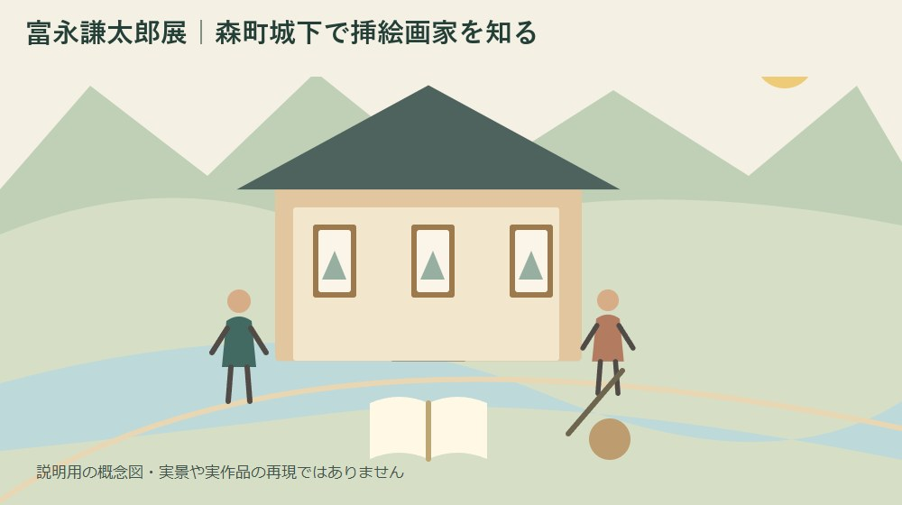

富永謙太郎展｜森町城下で挿絵画家を知る
／ 寺社・歴史

Q. 会期と休館日は？
2026年10月10日から18日まで森町城下のフジヤで開催。13日・14日は休館、9〜17時、最終日は16時まで。入場無料です。作品の詳細や撮影条件は訪問前に主催者へ確認してください。
森町城下で作品を見られるのは、会場を開け、作品を扱い、来場者を迎える人がいるからです。展示の告知だけでは見えない準備や片付けにも時間がかかります。まず、その手間に敬意を払いたい。今回は富永謙太郎展へ行くための日程と、絵を見る前に知っておきたい人物の歩みを整理します。
私は大石浩之（磐田市／不動産業）です。森町の外から町の土地や家に関わる立場で、文化を残す場所にも関心があります。ただし、この展示を鑑賞した感想ではありません。2026年10月7日に確認できた主催者と町の公式情報を土台に、訪問準備と私の考えを分けて書きます。
会期は10月10日から18日、途中に休館日がある
一般社団法人城下社中の開催案内では、富永謙太郎展の会期は2026年10月10日（土）から18日（日）です。会場は森町城下のフジヤ。入場は無料と案内されています。記事を公開した10月7日は開幕前なので、すでに展示を見られるという案内ではありません。
休館日は10月13日（火）と14日（水）です。会期だけを予定表へ入れると、この二日間も開いていると思いやすくなります。家族へ日程を送るときは「10〜18日」と短くせず、休館日を同じ文に書き添えると、別々の場所から集まる場合も行き違いを減らせます。
開館時間は9時から17時まで、最終日の18日だけは16時までです。これは開館時間の案内であり、最終入場時刻を別に確認できたわけではありません。終了直前の到着を前提にせず、鑑賞と退出に使える時間を残して出発するのが私の提案です。
主催者のお知らせ一覧にある2026年10月5日は告知日です。展示の開始日は10月10日で、二つの日付は役割が違います。検索結果や共有された画面には告知日だけが目立つ場合もあるため、訪問日を決めるときは開催案内本文の会期を読みます。
森町城下で生まれ、独学から挿絵の仕事へ
森町公式の人物紹介によると、富永謙太郎は1904年に森町城下で生まれました。高等小学校を卒業後に上京し、絵画を独学。昭和初期に富永絵画製作所を設立したと記されています。町の人物紹介の更新日は2024年8月29日で、今回の展覧会告知とは別の資料です。
町の紹介は、美人画を得意とし、菊池寛に腕を認められて挿絵画家となった経緯を伝えています。私が目を留めたのは、独学という学び方と、製作所を設けたという仕事の形です。郷土の画家という肩書きだけでなく、絵を職業として続けた人として読む入口になります。
同じ人物紹介には、同郷の村松梢風と長く仕事をしたことが書かれています。森町出身の二人が、それぞれ文章と絵の分野で仕事をつないでいた。私には、この関係が人物史の面白さに見えます。ただし、その記述だけで今回展示される作品名や共同制作の範囲までは確定できません。
村松梢風については、森町公式が1889年に森町飯田で生まれた文学者として紹介しています。富永謙太郎の城下と村松梢風の飯田を、同じ場所の名前として混同しないようにします。二人の関係を知りたい方には、村松梢風を森町から読む記事も入口になります。
町公式には村松梢風の著作名が載っていますが、それをそのまま富永謙太郎の挿絵作品一覧にはできません。作家が書いた本と、画家が実際に関わった本は別に照合する必要があります。会場で題名や掲載媒体の説明を見つけたら、その表記を手がかりに次の読書へつなぐと筋道が通ります。
展示を見る問いを一つ用意する
富永謙太郎展へ行く前には、作品の正解を覚えるより、見たいことを一つ決めておく方法があります。たとえば、人物の表情と周囲の空間のどちらへ先に目が向くか。これは作品評価を先回りする説明ではなく、初めて挿絵を見る人が自分の目で確かめるための問いです。
挿絵と文章の関係に関心があるなら、作品札に書名や媒体名があるかを見ます。説明がなければ、その場で断定せず「掲載先は未確認」とメモします。小説のどの場面を描いたのかを想像する楽しみと、資料で確定したことは分けておくほうが、後で本を探すときに役立ちます。
絵の細部を記録するときも、作品名、作者名、制作年、展示の説明を別々の欄にすると整理できます。制作年が書かれていない作品に、画家の活動年代から年を補う必要はありません。分からない欄を残すことは、鑑賞の失敗ではなく、後で確かめたい対象が見つかったということです。
子どもと訪ねる場合は、全作品を同じ速さで見る予定にしなくてもよいと私は考えます。気になった一枚について、どこに目が止まったかを帰りに話せれば、十分な持ち帰りがあります。子ども向けの解説や体験企画が用意されているかは未確認なので、あるものとして約束しないようにします。
良い点は、土地と人物の歩みを重ねられること
富永謙太郎展の良い点は、森町城下ゆかりの画家を、その土地で知る機会になることです。私は、遠くの美術館へ出かける予定を立てる前にも、地域で一人の画家に出会える入口があることを評価します。無料という案内は、家族で初めて訪ねる際の判断材料にもなります。
展示をきっかけに人物紹介を読むと、地名が単なる住所ではなくなります。城下で生まれ、東京へ出て仕事を築いたという歩みを、今の暮らしの場所からたどれます。町に残った人だけを郷土の担い手と考えず、外へ出た人とのつながりまで知る機会になるところに、私は価値を感じます。
村松梢風との仕事が紹介されている点も、入口を広げます。絵が好きな人は文章へ、読書が好きな人は絵へと関心を移せます。ただし、今回の展示が二人の共同作業を体系的に紹介する構成なのかは確認できていません。人物紹介から得られる関心と、展示内容の約束は分けておきます。
私は、展示に使われる場所にも継続の意味を感じます。建物を開けるには、作品を置く以前に日々の維持や管理が要ります。フジヤの具体的な維持費は公表本文では分かりませんが、文化の発信と場所の管理を合わせて考える視点は、森町の古建築活用を比較した記事でも扱っています。
注文したい点は、訪問条件をもう一段具体的に知りたいこと
富永謙太郎展の開催案内本文だけでは、展示点数、個別の出品作品、撮影条件を確認できませんでした。私は、作品を撮って紹介したい人や、特定の作品を目当てにする人には、この情報があると予定を立てやすいと考えます。未記載であることを、撮影自由や希望作品の出品保証とは受け取りません。
会場の駐車方法や、入口の段差、館内で休める場所も、今回確認した本文からは判断できません。歩行に不安のある家族が一緒なら、「行けるか」だけでなく、どこで車を降り、どこまで歩くかが予定を左右します。必要な条件だけを主催者にまとめて尋ねると、相談の焦点が定まります。
質問をする側にもできる配慮があります。公式案内にすでにある会期や時間を先に読んだうえで、掲載されていない条件を聞くことです。私は、問い合わせの量を増やすことより、一度のやり取りで家族の判断材料がそろう聞き方を勧めます。担い手の作業も来場者の手間も減らせるためです。
無料の展示であることと、運営に費用がかからないことは別です。私は、入場料がないから何でも対応してもらえるという受け止め方には賛成しません。開館時間と見学範囲を守り、作品や備品に触れず、撮影は現地の案内に従う。それだけでも、公開を続ける側の負担を増やさずに楽しめます。
対案・結論：今日、休館日込みで予定を一つ残す
富永謙太郎展の準備として今日できる一歩は、公式案内のリンクと休館日を家族の予定表に一緒に残すことです。会期、13日・14日の休館、最終日の16時終了を一組にします。まだ訪問日を決められなくても、候補日から休館日を外すところまでは進められます。
次に、同行者が困りそうな条件を一つだけ選びます。車をどこへ置くか、長く立てるか、写真を撮れるかなど、家族によって必要な確認は違います。分からないことを全部並べるより、訪問そのものを左右する条件から尋ねれば、電話やメールのやり取りも短く整理できます。
当日は主催者の最新案内を出発前に開きます。この記事で確認したのは10月7日時点の情報であり、その後の変更まで保証するものではありません。保存画像だけに頼らず元のページへ戻れるようにしておくと、変更告知が出た場合にも気付きやすくなります。
町内で別の場所も回るなら、展示を見る時間を先に置き、その後の立ち寄りは余裕に合わせます。予定を詰めて閉館間際に駆け込むより、一枚を落ち着いて見られる日程のほうが、この展示を目的に来た意味が残ると私は考えます。近隣施設の営業を会期から推測することもしません。
家族に残す記録は、作品名と確認元を分ける
富永謙太郎展から持ち帰る記録は、作品の写真だけとは限りません。撮影できない場合でも、許される範囲で題名と印象を短く書けます。どの資料を見て知ったことか、展示で自分が感じたことかを分ければ、後で家族に話すときも、作者の事実と鑑賞者の感想が混ざりません。
会場で手にした配布物があれば、訪問日と一緒に保管します。後から似た題名の展示を探したとき、開催年と会場名が分かるだけで資料を区別できます。紙を残すのが難しければ、配布物の保存や撮影の可否を確かめたうえで、出典の名称だけでも記録しておく方法があります。
家に古い本や絵があることを思い出しても、今回の展示と似ているという理由だけで作者や価値を決めないようにします。署名、奥付、入手経緯などを動かさず記録し、判断が必要なら専門家へ相談します。展示を見る行為と、家の所蔵品を鑑定する行為は別の段取りです。
文化を残す話をもう少し広く考えるなら、森町の文化財保存活用を扱った記事へつながります。ただし、町の計画に関心を持つことと、個別の展示へ自由に作品を持ち込むことは別です。見せたい資料がある場合も、受入れの可否を先に確認します。
大石の視点：作品を見る時間を、場所を守る仕事につなぐ
私は、富永謙太郎展を訪ねる準備も、家の維持を考えるときと同じく「誰が、いつ動くか」で考えます。家族の運転役が決まっていなければ予定は動かず、会場を開ける人がいなければ鑑賞はできません。文化の価値を語る前に、その両側の段取りへ目を向けたいと思っています。
ここからは私の意見です。もし家族の予定表を前にして訪問日を決めるなら、私は最初に休館日を消し、次に帰宅時刻を書きます。その残りを鑑賞に使える時間として見ます。作品を知るための外出を、移動の慌ただしさだけで終わらせたくないからです。実際に今回の展示を訪問した体験ではなく、私ならこう組むという判断です。
正直なところ、作品の詳しい案内が増えれば来場しやすくなる一方、発信を増やすほど地域の手間も増える点には迷います。全部をウェブへ載せることが唯一の答えとは思いません。会期と訪問条件は簡潔に、作品との出会いは会場に残す。そんな役割分担でも成り立つはずです。
私が言い切れるのは、入場無料でも、公開を支える人の時間は無料ではないということです。来場者が休館日と閉館時刻を守ることも、文化を残す側への具体的な協力になります。今日の一歩は大きな支援の宣言ではなく、正しい日付を一つ共有することで足ります。
FAQ
会期中は毎日見られますか？
富永謙太郎展は2026年10月10〜18日の開催ですが、13日と14日は休館です。開館は9〜17時、最終日は16時まで。会場は森町城下のフジヤで、入場無料です。告知日は10月5日なので開催初日と混同せず、出発前に主催者の最新案内を確認してください。最終入場時刻は別途確認が必要です。
村松梢風とはどのような関係ですか？
森町公式の富永謙太郎の人物紹介には、同郷の村松梢風と長い間仕事をしたと記されています。富永は森町城下、村松は森町飯田の出身です。ただし、今回の展示でどの共同の仕事が紹介されるかは開催案内本文では未確認です。村松の著作すべてを富永の挿絵作品と扱わず、作品札などで個別に確かめます。
会場で作品を撮影できますか？
2026年10月7日に確認した開催案内本文には、作品撮影の条件は示されていません。撮影やSNS掲載を目的に訪ねる場合は、主催者へ事前に確認し、当日も会場の指示に従ってください。入場無料という案内は撮影許可を意味しません。撮影できない場合も、許される範囲で作品名や印象を記録する楽しみ方があります。
出典・確認日
- 城下社中・富永謙太郎展の開催案内（2026年10月確認／確認日：2026-10-07）
- 森町・富永謙太郎（2026年10月確認／確認日：2026-10-07）
- 森町・村松梢風（2026年10月確認／確認日：2026-10-07）
最終確認日：2026-10-07。制度・日程・数値・受付条件は変わる場合があります。最新情報は発信主体へ確認し、修復・権利・税務などの個別判断は適切な専門家へご相談ください。